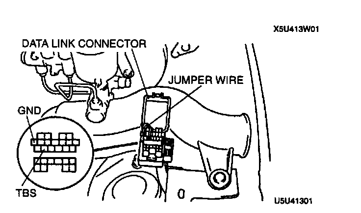
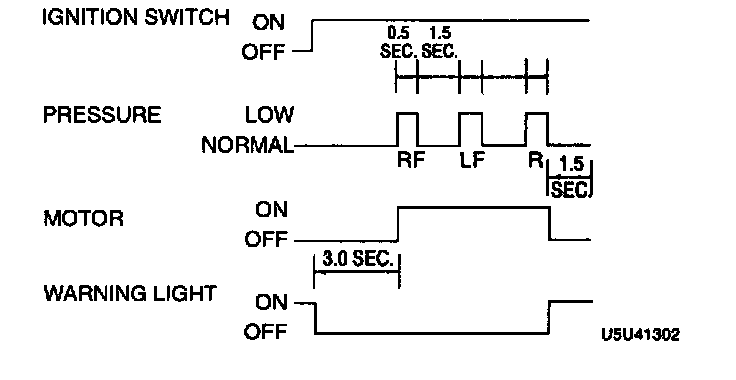

Flow of Diagnosis
Note: If any past diagnostic trouble code is memorized, the system inspection mode will not work. Make sure that there is no codes in the ABS memory before performing this inspection.1. Verify that the battery is fully charged. With the ignition switch at ON, verify that the ABS warning light goes out after 2-4 seconds.
2. If the light stays ON after 2-4 seconds the ABS control module detects a failure and will not activate the ABS hydraulic unit. Follow the troubleshooting procedures.
3. Turn the ignition switch off.
4. On level ground, jack up the vehicle and support it evenly on safety stands. Shift the transmission to neutral or N position.
5. Release the parking brake.
6. Rotate the wheels by hand, and inspect for brake drag.
Caution: Connecting the wrong data link connector terminals may possibly cause a malfunction. Carefully connect the specified terminals only.

7. Using a jumper wire, connect the TBS and GND terminals of the data link connector.
8. Depress the brake pedal, and have an assistant verify that the right front wheel will not turn.
9. With the brake pedal still depressed, turn the ignition switch to ON and verify that the brake is released momentarily (approx. 0.5 sec.) and that the wheel turns when pressure-reduction operates.

10. Verify operation of the remaining wheels in order: left front, right rear, left rear.
11. When steps 9 and 10 show correct operation, the following systems are okay.
^ Brake piping to ABS hydraulic unit
^ Braking system, including ABS hydraulic unit
^ Electrical system in ABS hydraulic unit (solenoid, ABS motor, etc.)
^ ABS control module, its output system (solenoid, relay, etc.) and harness
The following are not inspected with the steps 9 and 10.
^ Input system and harness of ABS control module
^ Intermittent failure
^ Fluid leakage
12. Replace the ABS hydraulic unit if wheels do not rotate. Inspect brake piping to ABS hydraulic unit if wheels rotate but their rotation order is not correct. Remove the jumper wire.